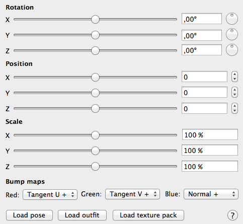

To add a model, select in the menu “File” the point “Add Model”. You can also click the “+”-button in the document window. You can select the model, no matter where on the hard drive it is. Select the .mesh or .mesh.ascii file.
The new model appears in the default pose at origin of the scene. To move it away, there are several options:

In the document window, you can move the model after you selected it in the list on the left. Enter the position directly or via the sliders. You can also rotate and scale the model.
You can also rename the model in the list.
In the render window you can move the object with arrow keys or the mouse when it is selected:
| Input | Movement |
|---|---|
| Arrow keys | Moves the model forward, backward, left or right, relative to the camera position. If you press the shift key, the model moves faster. |
| Arrow keys up and down with alternate key pressed | Moves the model up or down. If you press the shift key, the model moves faster. |
| Click and drag with alternate key pressed | Moves the model forward, backward, left or right, relative to the camera position. |